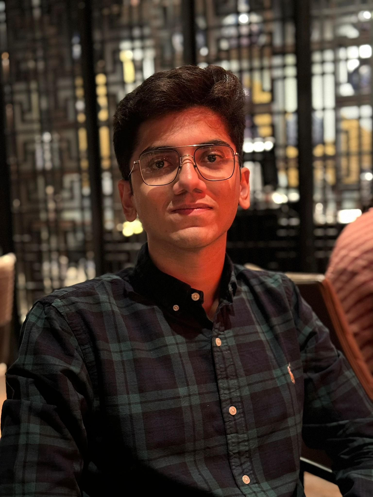

|
Shubham Gandhi
I am a final year B.Tech student at College of Engineering, Pune affiliated to the department of Computer Enginnering and Information Technology, with relevant coursework in Algorithms, Machine Learning, Computer Vision, Databases, OS, Probability & Statistics, Linear Algebra.
I've been fortunate to be an advisee of Dr Y. V. Haribhakta for my B.Tech project centered exploring the synergies of federated learning and Large Language Models in Tele-Health services.
I've also had the wonderful opportunity to work as a Computer Vision Research intern at the Defence Research and Development Center (DRDO), a software engineering at JP Morgan & Chase, NLP research intern at the Tata Research and Development Center, and as an external research collaborator for a AI startup Rezoomex
Email /
CV /
LinkedIn /
Github
|

|
Research
I'm interested in Cognitive and Embodied intelligence, Multimodal Learning, Geometric Deep Learning, Generative Foundation Models, and Federated Learning. Much of my research is about inferring the physical world through intelligent multimodal AI systems.
As an upcoming intern at DRDO, I have been assigned to work on a project involving real-time object detection and tracking for the Ministry of Defense of India.
At COEP, My current project under the Data Science and Artifical Intelligence research group recieved a grant from the instituiton to architect a license plate recognition system and improve campus safety and security.
At TRDDC, I worked on adapting submodular functions to the timeline summarization task while preserving the elegance and advantages of original multi-document summarization models.
At Rezoomex, I worked on implemented advanced natural language processing (NLP) techniques to improve entity recognition and disambiguation, including concept extraction, external knowledge linking, named entity resolution, word sense disambiguation, and maintained a robust knowledge graph by integrating diverse data sources, such as Wikipedia.
|
|
|
Leveraging Knowledge Graphs for Orphan Entity Allocation in Resume Processing
Aagam Bakliwal, Shubham Gandhi*, Yashodhara Haribhakta
IEEE International Conference on Artificial Intelligence in Engineering and Technology (IICAIET), 2023
arxiv
This research presents a novel approach for orphan entity allocation in resume processing using knowledge graphs. By leveraging these techniques, the aim is to automate and enhance the efficiency of the job screening process by successfully bucketing orphan entities within resumes.
|
|
|
Leveraging a Randomized Key Matrix to Enhance the Security of Symmetric Substitution Ciphers
Shubham Gandhi*, Om Khare, Mihika Dravid, Sunil Mane, Mihika Sanghvi, Aadesh Gajaralwar, Saloni Gandhi
IEEE Asia-Pacific Conference on Computer Science and Data Engineering, 2023
preprint
An innovative strategy to enhance the security of symmetric substitution ciphers is presented, through the implementation of a randomized key matrix. The effectiveness of the proposed methodology is supported by comprehensive testing and analysis, which encompass computational speed, frequency analysis, keyspace examination, Kasiski test, entropy analysis, and the utilization of a large language model.
|
|
|
YOLOv8-Based Visual Detection of Road Hazards: Potholes, Sewer Covers, and Manholes
Om Khare*, Shubham Gandhi, Aditya Rahalkar, Sunil Mane
IEEE Punecon, 2023
Under Review
YOLOv8's performance as a object detection model in the context of pothole detection was comprehensively evaluated in this research paper, and it was compared with previous iterations such as YOLOv5 and YOLOv7.
|
Achievements
- Secured academic distinction in the CBSE board examinations, ranking within the top 5% out of 2 million students across India. Attended college with an 85%-ride scholarship (99th percentile) for 4 years awarded by the Computer Engineering school at COEP.
- Successfully sold an innovative solution to the startup Rezoomex for 640,000 INR, aimed at automating the allocation of orphan entities in resumes.
- Accepted into J. P. Morgan’s summer intern cohort from a pool of over 1000 candidates from the J.P. Morgan Code for Good national-level hackathon (3rd Place).
- Selected among 320 students to represent COEP Tech at the National Level Smart India Hackathon and deliver an innovative solution to the Ministry of Micro, Small, and Medium Enterprises, Government of India.
- Invited to review for the prestigious Asia-Pacific Conference on Computer Science and Data Engineering (CSDE) in 2023, contributing to the selection of high-quality research papers and ensuring the conference’s academic excellence.
|
Website template cloned from here!
|
|
{kind=link}